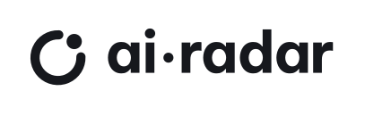
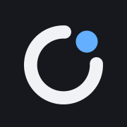
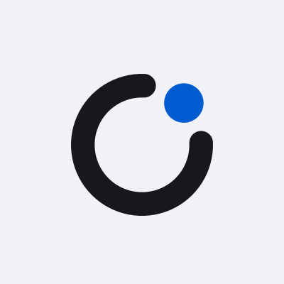
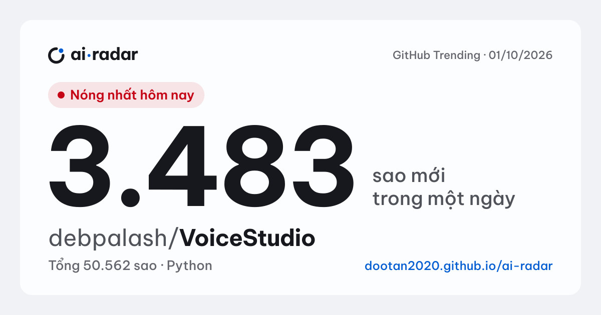
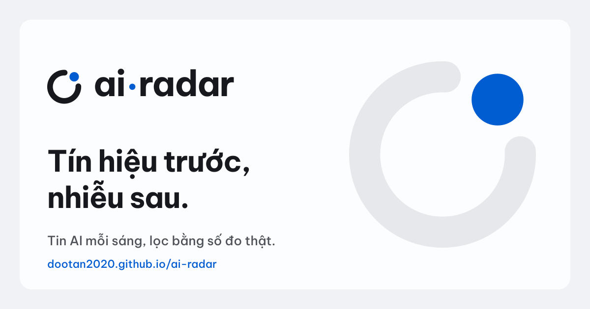
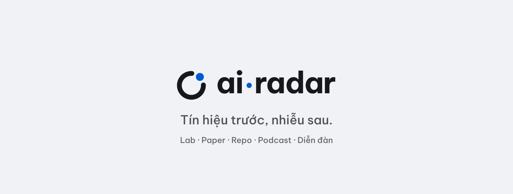
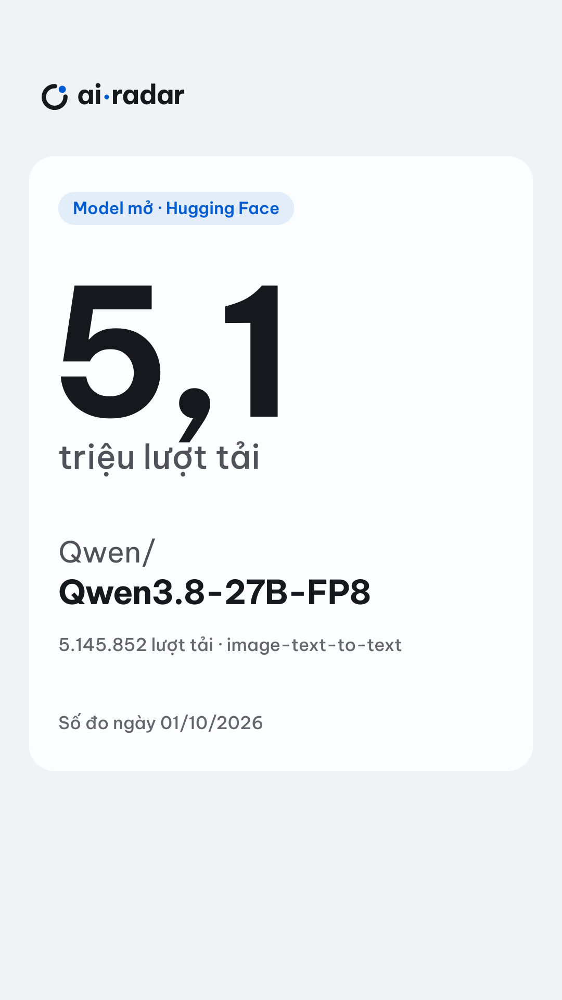
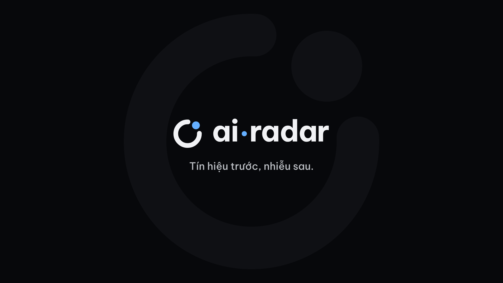
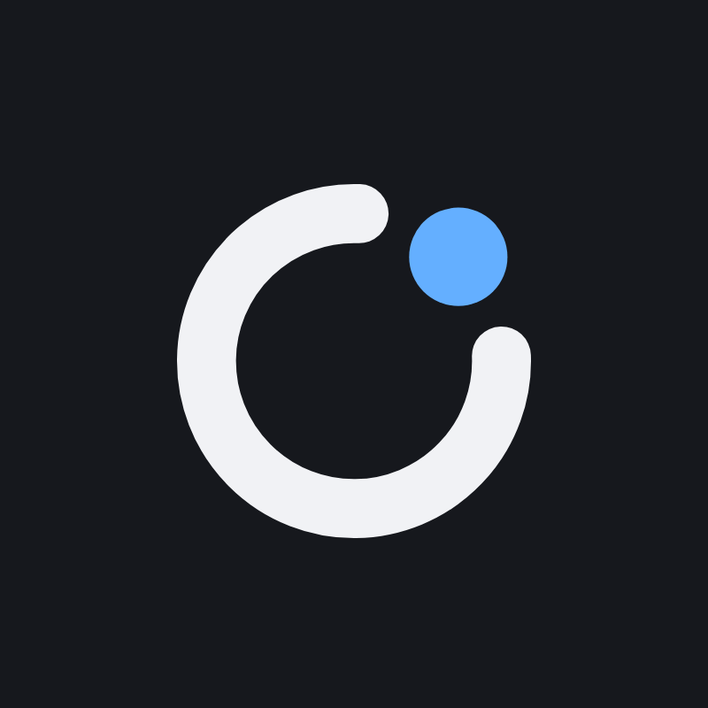
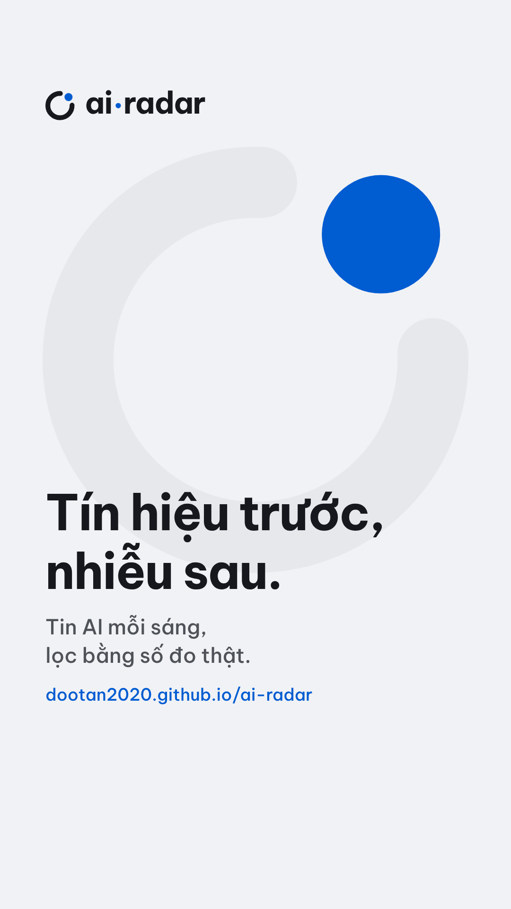

Bộ nhận diện · 03/10/2026
Tín hiệu trước,
nhiễu sau.
Mỗi ngày thế giới AI phát ra hàng trăm tin: blog của các lab, paper, repo, podcast, các cuộc bàn trên diễn đàn. ai·radar nghe hết, rồi chỉ giữ lại vài điều đáng xem, mỗi điều kèm một con số giải thích vì sao. Biểu tượng kể đúng việc đó: một vòng nghe, một khe lọc, một chấm đi qua.
Vòng tín hiệu
- 1VòngMọi thứ ai·radar lắng nghe. Cùng dáng vòng điểm nóng đang chạy trên trang.
- 2KheBộ lọc. Phần lớn tin không qua được.
- 3Chấm xanhMột tín hiệu đáng xem. Cũng là dấu chấm giữa “ai·radar”.
Chấm luôn nằm ở góc 1 giờ 30, ngay trong khe. Đó là điều duy nhất không được đổi.
Logo
Một vòng, một chấm, một chữ.
Chữ “ai·radar” luôn viết thường, đậm 700, giãn chữ −0,025em như tiêu đề trên trang. Dấu chấm giữa được vẽ lại thành chấm tròn cùng màu với chấm trong biểu tượng.
Bản đầy đủ
Bản biểu tượng
Trên nền tối
Một màu, mực

Một màu, trắng
Vùng an toàn
x là chiều cao chữ “a” trong logo. Giữ trống ít nhất x ở cả bốn phía. Mọi tệp logo trong assets/ đã chứa sẵn khoảng này.
Cỡ nhỏ nhất
Trên giấy: logo đầy đủ rộng ít nhất 25mm, biểu tượng 6mm. Dưới 24px, dùng favicon-16.svg: nét vòng đúng 2px để không nhoè.
Những cách dùng sai
Màu
Gần như không màu. Một chấm xanh.
Màu thương hiệu lấy nguyên từ site/tokens.css, không thêm màu mới. Khung là xám lạnh, màu thật đến từ nội dung. Xanh là tín hiệu và hành động, đỏ chỉ để báo “đang phát” và “nóng”.
- Token
- gray-21 · color-ink
- Hex
- #16181D
- oklch
- 0.21 0.009 265
- Dùng
- Chữ, vòng của biểu tượng
- Token
- blue-53 · color-accent
- Hex
- #005CD1
- oklch
- 0.50 0.20 256
- Dùng
- Chấm, liên kết, nút chính
- Token
- gray-96 · color-canvas
- Hex
- #F1F2F5
- oklch
- 0.962 0.004 265
- Dùng
- Nền trang, nền ảnh chia sẻ
- Token
- gray-99 · color-surface
- Hex
- #FCFDFE
- oklch
- 0.993 0.002 265
- Dùng
- Ô bento, thẻ
- Token
- gray-13 (nền tối)
- Hex
- #07080B
- oklch
- 0.135 0.006 265
- Dùng
- Nền tối, bìa YouTube
- Token
- blue-74 (accent tối)
- Hex
- #64AFFF
- oklch
- 0.74 0.14 252
- Dùng
- Chấm trên nền tối
- Token
- gray-44 · color-ink-2
- Hex
- #4F5359
- oklch
- 0.44 0.012 265
- Dùng
- Nhãn, dòng phụ
- Token
- red-55 · color-live
- Hex
- #C50516
- oklch
- 0.52 0.21 27
- Dùng
- Chỉ “đang phát”, “nóng”
Tỉ lệ trên một khung hình
Xanh chiếm khoảng 2% diện tích, đủ để mắt tìm thấy chấm đầu tiên. Nhiều xanh hơn thì chấm mất ý nghĩa.
Tương phản đã đo (WCAG 2.1)
| Cặp màu | Tỉ lệ | Mức |
|---|---|---|
| Mực trên Nền | 15,86:1 | AAA |
| Xanh tín hiệu trên Nền | 5,44:1 | AA |
| Trắng ô trên Xanh tín hiệu | 5,97:1 | AA |
| Xám 96 trên Đêm | 17,89:1 | AAA |
| Xanh đêm trên Đêm | 8,70:1 | AAA |
| Chữ phụ trên Ô | 7,60:1 | AAA |
| Đỏ đang phát trên Ô | 6,05:1 | AA |
Chữ
Một họ chữ, đủ dấu tiếng Việt.
Be Vietnam Pro, bốn độ đậm 400 · 500 · 600 · 700, giống cách Apple chỉ dùng một họ SF. Không dùng Sora hay Fira Code: đã đo ngày 02/10, cả hai thiếu dấu tiếng Việt.
Be Vietnam Pro
Miễn phí, giấy phép SIL OFL. Tải tệp: 400 · 500 · 600 · 700 · giấy phép, hoặc tải ở Google Fonts.
Tin AI hôm nay 700 · logo, tiêu đề, con số
Đang phát và sắp tới 600 · nhãn, tên ô
Repo lấy về dùng được 500 · dòng phụ, menu
Mỗi tin dẫn về nguồn gốc 400 · đoạn văn
Thang số, tách khỏi thang chữ
Số luôn đậm 700, tabular-nums, giãn chữ −0,04em. Số thật lấy từ radar.json ngày 01/10/2026.
Dấu chồng tầng cần chỗ
Hội nghị NeurIPS sắp diễn ra. Những điều đáng xem: ế, ộ, ữ, ẵ, ặ, ỷ, Đ.
Đoạn văn cao dòng 1,55, tiêu đề 1,12. Chữ hoa có dấu (Ế, Ộ) không bao giờ đặt cao dòng dưới 1,1, kẻo dấu chạm dòng trên.
Giọng văn
Nói bằng số, nói ít, nói thật.
ai·radar nói như một đồng nghiệp đọc tin hộ bạn từ sáng sớm: bình tĩnh, chính xác, không tô vẽ.
Bốn điều
- Mỗi khẳng định có một con số và một nguồn.“3.483 sao mới trên GitHub”, không phải “rất nhiều người quan tâm”.
- Câu ngắn, chủ ngữ là sự việc.Tiêu đề tiếng Việt dưới 12 chữ. Ít khi xưng “chúng tôi”.
- Tên gốc giữ nguyên.Tiêu đề tin, tên model, tên repo viết đúng như bản gốc, kể cả tiếng Anh.
- Chưa biết thì nói chưa biết.“Chưa có”, “không có buổi nào đang phát”. Không đoán, không lấp chỗ trống.
Cách viết số và giờ
50.562 (chấm ngăn nghìn) · 5,1 triệu (phẩy thập phân) · 01:11 (giờ 24) · 01/10/2026 · 3 giờ trước
Ví dụ thật
KHÔNGVoiceStudio gây bão GitHub, dân tình phát sốt!!!
NÊNVoiceStudio: 3.483 sao mới trong một ngày trên GitHub.
KHÔNGModel siêu hot của Qwen, ai cũng đang tải về!
NÊNQwen3.8-27B-FP8: 5.145.852 lượt tải trên Hugging Face.
KHÔNGĐừng bỏ lỡ sự kiện AI lớn nhất năm!
NÊNOpenAI DevDay 2026 Keynote: đã phát ngày 29/09, dài 67 phút.
ĐANG CHẠY TRÊN TRANGChưa có chuyện nào được từ 2 nguồn đưa trong 72 giờ, nên đây là chuyện có điểm nóng cao nhất.
CHÚ THÍCH BÀI ĐĂNG MẪU3.483 sao trong một ngày. VoiceStudio là bộ công cụ giọng nói chạy hoàn toàn trên máy, viết bằng Python, tổng 50.562 sao. Nguồn: GitHub Trending, 01/10/2026.
Tránh
Ứng dụng mẫu
Mỗi khung một con số.
Ảnh mẫu dùng tin thật từ site/data/radar.json (01/10/2026). Đường nét đứt đánh dấu vùng an toàn của từng nền tảng, không nằm trong tệp.
Favicon và biểu tượng ứng dụng

180 (hiển thị ½)Ô nền mực giúp biểu tượng hiện rõ trên cả thanh tab sáng lẫn tối. Bản 180 để tràn viền, iOS tự bo góc.
Avatar mạng xã hội

avatar-light.svg400×400. Biểu tượng chiếm một nửa khung, nằm gọn trong vòng tròn mà Facebook, YouTube, X, TikTok cắt ra.
Ảnh chia sẻ 1200×630 · một tin

Khuôn cho một tin: nhãn, một con số lớn, tên gốc, nguồn và ngày đo. Số và tên thay theo tin; bố cục giữ nguyên.
Ảnh chia sẻ mặc định

Cho trang chủ. Không ghi con số theo ngày, để ảnh không bao giờ cũ.
Bìa trang Facebook · 1640×624

Ảnh bìa kênh YouTube · 2560×1440
Vòng lớn tông trên tông chỉ hiện trọn trên TV; máy tính và điện thoại chỉ thấy dải giữa.
Thumbnail video ngắn · 9:16

1080×1920 cho Shorts, Reels, TikTok. Đáy 420px và mép phải 160px để trống cho nút và chú thích.
Tải về
PNG để đăng ngay, SVG để sửa.
Ảnh PNG đã đúng cỡ từng nền tảng, tải về là đăng được. Bản SVG mở được ở Figma, Illustrator, Canva hay trình duyệt mà không cần cài font, vì chữ đã đổi thành nét. Muốn sửa số trên ảnh mẫu: chạy python brand/build-assets.py rồi python brand/export-png.py từ gốc repo, màu được đọc lại từ site/tokens.css.
Đăng ngay · PNG và ICO



cover-youtube.pngBìa YouTube · 2560×1440

avatar.pngAvatar Facebook, YouTube · 800×800 og-default.pngẢnh chia sẻ mặc định · 1200×630


khung-9x16.pngStory, Reels, Shorts · 1080×1920